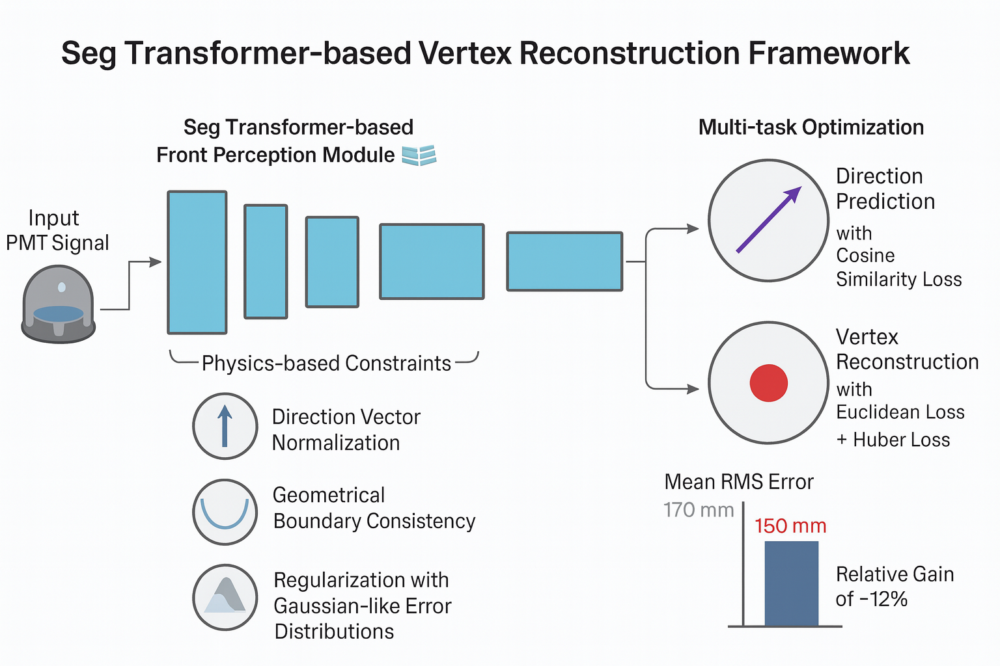

Figure 1: BioRender-style framework diagram of the distributed deep learning training system for neutrino event reconstruction. The Seg Transformer architecture provides a front perception module capable of effectively capturing three-dimensional spatial dependencies from photomultiplier tube (PMT) signals, combined with physics-informed inductive biases for robust vertex and direction reconstruction.
Accurate reconstruction of event direction and vertex position is a crucial prerequisite for achieving the physics goals of large-scale neutrino experiments such as JUNO. Conventional analytical approaches often face limitations in handling high-dimensional detector signals under complex noise conditions. In this project, we investigate a deep learning–based reconstruction framework leveraging a Seg Transformer architecture combined with physics-informed inductive biases.
The Seg Transformer provides a front perception module capable of effectively capturing three-dimensional spatial dependencies from photomultiplier tube (PMT) signals, which are essential for robust vertex reconstruction. To further enhance physical consistency and model generalization, multiple physics-based constraints were incorporated during training, including direction vector normalization, geometrical boundary consistency, and regularization reflecting Gaussian-like error distributions.
Our framework adopts a multi-task optimization paradigm, where direction prediction is trained with a cosine similarity loss to optimize angular resolution, and vertex reconstruction is constrained by Euclidean and Huber losses to minimize spatial deviations. Experimental evaluation on simulated datasets demonstrates that the proposed method achieves a significant improvement in vertex reconstruction performance: the mean RMS error has been reduced from the previous state-of-the-art level of 170 mm down to 150 mm, corresponding to a relative gain of about 12%.
These results highlight the synergy between transformer-based architectures and physics-constrained learning, providing a promising pathway toward high-precision event reconstruction in next-generation neutrino detectors.
Deep learning-based neutrino event reconstruction framework using Seg Transformer architecture combined with physics-informed inductive biases. Achieves 12% improvement in vertex reconstruction accuracy (from 170mm to 150mm RMS error) through multi-task optimization with physics constraints. The system effectively captures 3D spatial dependencies from PMT signals and incorporates direction vector normalization, geometrical boundary consistency, and Gaussian-like error distribution regularization for robust performance in large-scale neutrino experiments like JUNO.